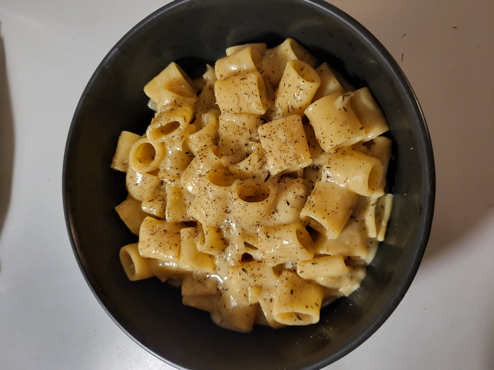

Fransk løg pasta one-pot style
Lækker comfort food pasta ret one-pot style
Ingredienser
- 4 alm. løg
- 3 kinesiske hvidløg
- 400g pasta
- 8 dl grøntsagsbouillon
- 1 dl piskefløde
- 1 dl hvidvin
- 1 spsk balsamico
- 1 spsk olivenolie
- 25g smør
- 1 tsk timian
- 175g ost - fx cheddar eller emmentaler
- Salt & peter
Fremgangsmåde
- Halver løg og snit dem fint
- Kom smør og olivenolie i en gryde, og tilsæt løg. Sauter det i ca. 35 min, eller ind til de er let karamelliseret
- Tilsæt hvidvin, piskefløde, grøntsagsbouillon, hvidløg, timian & pasta til gryden. Bland det godt, og lad det koge i ca. 12 minutter eller indtil pasta er al dente
- Tilsæt ost, balsamico, salt & peber. Rør indtil osten er smeltet og retten er lækker og cremet
Servering
Server i en skål med friskkværnet peber
